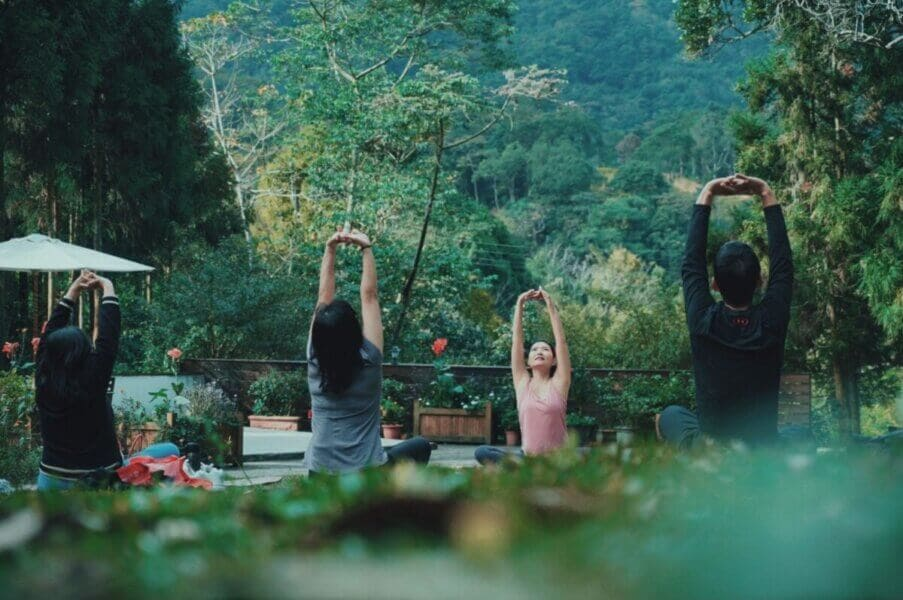
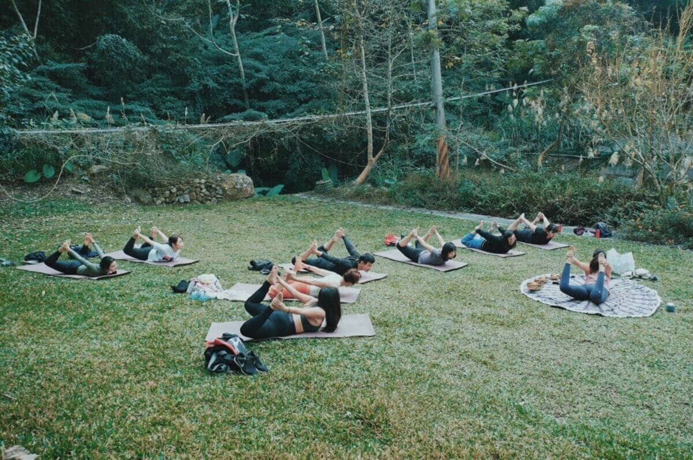
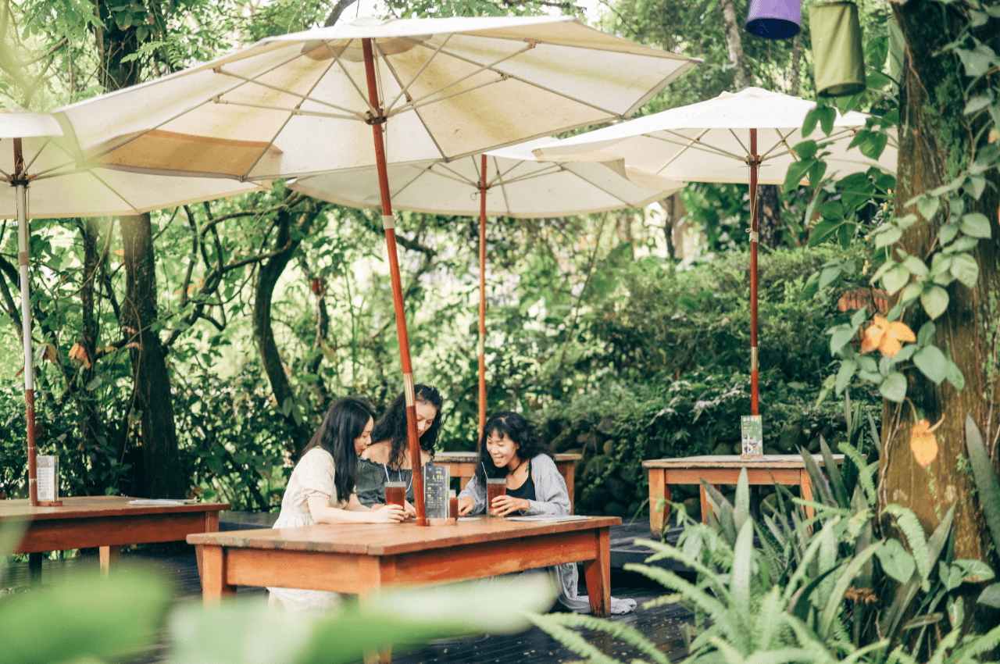
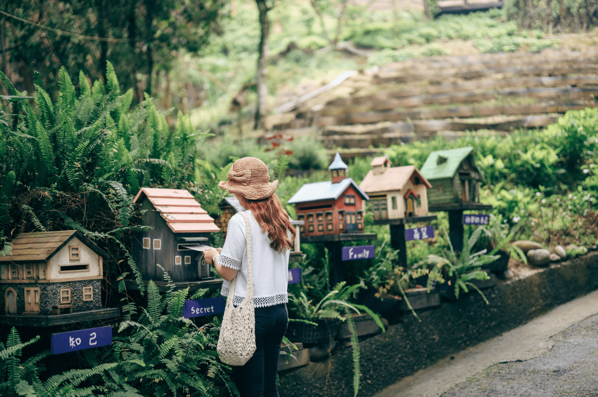
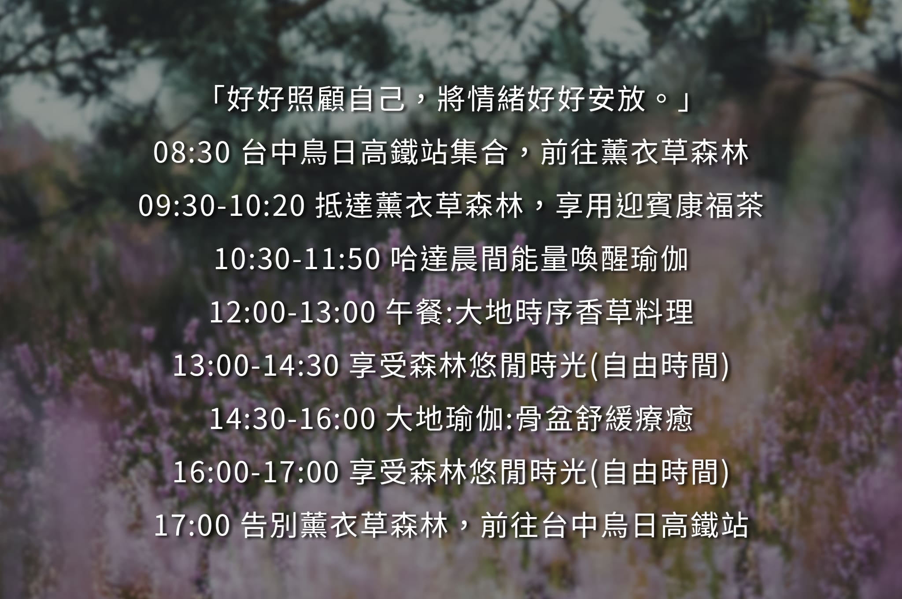

森林裡的瑜伽教室｜薰衣草森林一日遊
「在森林中找回身與心的連結，輕觸靈魂深處最純粹的感動。」

台中市新社區
 行程天數2天1夜
行程天數2天1夜
 出發日期
2022/06/24(五)
出發日期
2022/06/24(五)
成團人數2-10人
行程特色
「在森林中找回身與心的連結，輕觸靈魂深處最純粹的感動。」
《森林中的瑜伽教室｜薰衣草森林
一日遊》走進充滿正面氣息、無邊際的自然場域，讓森林凝聚我們的專注力、流動停滯的情感，在每一次的吸吐間重新認識自己，讓心靜下來、令森林引你前行。
你有多久沒有將目光投射自我、關照內心的波動了呢？
▍暫停不斷向前奔跑的步伐，許自己一天的「大休息」吧！
生命就像瑜珈，有初期摸不到腳尖的惆悵、有反覆練習後的自在流動，更有著閉上雙眼感受心靈感動的休息片刻，一切的經歷、成長、轉折都是人生中最美麗的風景。而我們總是忙碌奔波著，忽略了「感受內心、梳理思緒」的重要與美好，《森林中的瑜伽教室》便是ㄧ場讓生命慢下來的儀式，讓我們一起透過森林裡自在的瑜伽練習，喚醒終日忙碌的自我、好好照顧自己。
▍擁抱森林四季，讓大自然的能量照耀日常。
走進這座無牆的美術館，欣賞動植物與生態多元樣貌隨四季流轉的變化，以謙卑的姿態融入其中，成為大自然最美的藝術作品，把握這山林相依、花草相伴的一天，好好品味慢時光的推移。在森林、陽光與微風中，讓身心在流動的瑜珈動作裡凝聚向前，讓疲勞與緊繃消散於指向天邊的指尖。行程後回歸輕鬆自在、獲得純淨愉悅，離開森林時，悄悄得帶走一片美好，然後延續至妳的日常。



行程說明
▍台中烏日高鐵站集合，踏上旅途
台中高鐵站 7
號出口集合，前往薰衣草森林園區。旅人們可於行車路程中養精蓄銳、期待一日的森林瑜伽體驗。
▍抵達台中新社薰衣草森林
跟著本質旅行，前往位在新社的薰衣草森林，沿途海拔逐漸升高，人煙漸漸稀少，我們緩緩的前行，靈魂才跟得上。
▍迎賓康福茶
以一杯溫暖的康福茶展開一整天的體驗，我們稍作休憩與更衣，拋開煩腦，隱身在山居裡，好好呼吸一天。
▍哈達晨間喚醒瑜伽
以哈達瑜伽來喚醒這個早晨，於植草間感受微光的照耀與微風的吹拂，由瑜伽老師帶領體驗搭配瑜伽與呼吸、冥想練習，達到身心靈的平衡，幫助擺脫深層的壓力。
▍大地時序香草料理
享受薰衣草森林內的慢活時光，在一上午的森林瑜伽練習體驗後，走進森林島嶼咖啡廳，品嚐本質旅行專屬的、森林裡最天然的鮮食餐點。
▍大地瑜伽，骨盆舒緩療癒
舒緩骨盆肩頸以及久坐的緊繃痠痛，學著善待身體，學會愛自己。
▍漫步薰衣草森林園區｜自由活動
園區自在漫步，你可以選擇造訪年輪郵局、香草花園。在年輪郵局中，可以選擇寄一封信給若干年後的自己、給有緣的陌生人，製造一次美好的不期而遇。
▍回程烏日高鐵站
備妥行李、離開薰衣草森林，搭乘本質旅行商務接駁車前往台中烏日高鐵站。短暫告別、期待下次旅程的美好相遇（為防塞車狀況影響行車時間，建議旅客購買
19:00 以後的高鐵票）。

注意事項
一、出發前旅客任意解除契約需收取消費用，其額度如下：
- 通知於出發日前30日，無需賠償任何旅遊費用。
- 通知於出發日前7日內，賠償旅遊費用百分之五十。
二、嚴重特殊傳染性肺炎 COVID-19
注意事項：為配合中央政府規定防控疫情，具「列入第三級警吿國家或地區」活動史者，需進行
14
天居家檢疫。若您有上述旅遊史，務必事先告知，我們將全額退款。
三、配合「體溫過高者依傳染病防治法第 37 條第 1 項第 5 款及第 3
項規定」，旅行社於出發當日將進行體溫檢測，旅客經額溫槍量測達
37.5
度或有呼吸道症狀，將勸導其返家休息及就醫並婉拒旅客參團，也將全額退款。
**以上資料參考至本質旅行，純屬作業學習用途。
立即報名